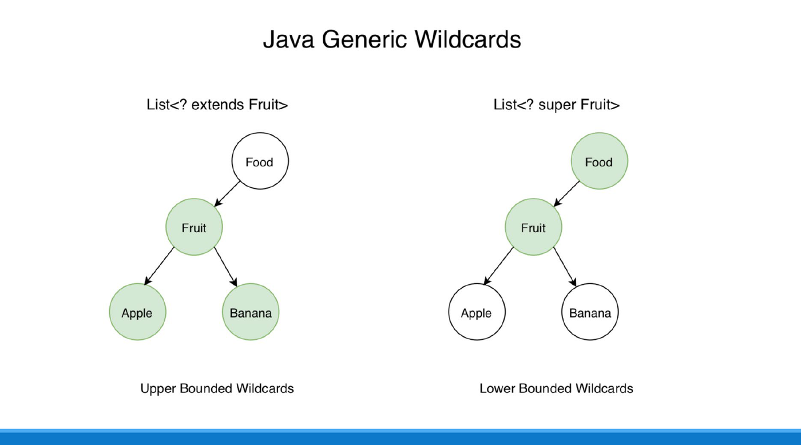
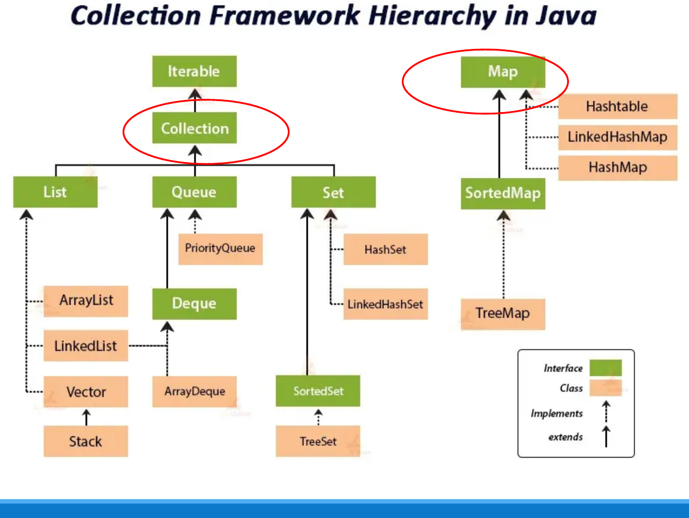
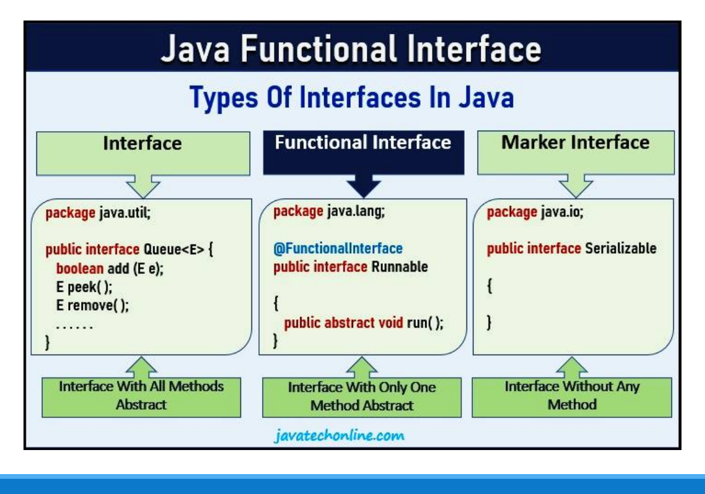
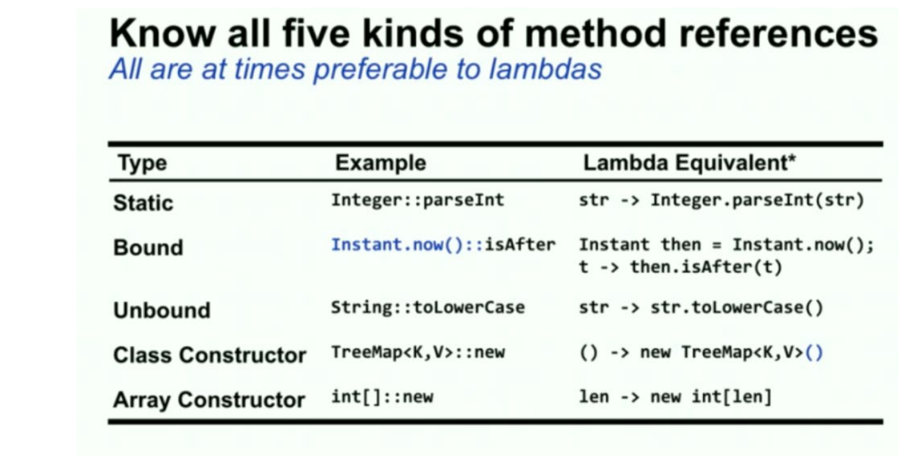
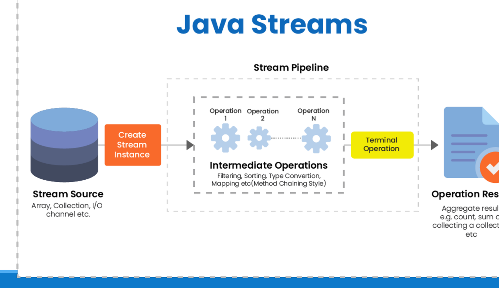

Early Java architectures relied heavily on raw collections storing
java.lang.Object, forcing developers to write manual
downcasts that frequently crashed at runtime with
ClassCastException. Modern Java (from Java 5 through Java
17+) introduced powerful language features—Generics,
the modernized Collections Framework,
Functional Interfaces, Lambda
Expressions, the Streams API, and
Enhanced Switch Expressions—to shift error detection
from runtime to compile time and enable expressive declarative
programming.
1. Generics: Compile-Time Type Safety
Generics allow types (classes and interfaces) to act as parameters when defining classes, interfaces, and methods.
// Pre-Generics (Unsafe): Relies on raw Object and explicit casting
List rawList = new ArrayList();
rawList.add("Hello");
rawList.add(100); // Compiles fine, but causes ClassCastException downstream!
String s = (String) rawList.get(1); // RUNTIME ERROR: Integer cannot be cast to String
// With Generics (Compile-Time Safe):
List<String> safeList = new ArrayList<>();
safeList.add("Hello");
// safeList.add(100); // COMPILE-TIME ERROR: Incompatible types detected immediately!
String str = safeList.get(0); // Implicit, safe castingType Erasure Mechanics
To ensure backward compatibility with older JVM versions, Java implements generics through Type Erasure:
- During compilation, the compiler inspects and enforces generic type constraints.
- The compiler then erases all generic type
parameters, replacing unbounded type variables (
T) withObject(or their leftmost bound, e.g.,<T extends Number>becomesNumber). - Explicit typecasts are inserted into bytecode automatically by
javac. - At runtime, the compiled
.classbytecode holds zero generic type information.
[!WARNING] Consequences of Type Erasure:
- You cannot instantiate a type parameter directly:
new T()is illegal.- You cannot create generic arrays:
new T[10]is illegal.- Type parameters cannot be primitive types:
List<int>is invalid; you must use wrapper types likeList<Integer>. Primitive arrays (e.g.,int[]) cannot bind to generic arrays (T[]) because primitives do not extendObject.
2. Generic Classes and Generic Method Signatures
Exam questions frequently test the syntax for declaring generic methods:
public class ArrayUtilities {
// Generic method declaration syntax:
// <TypeParams> ReturnType methodName(ParameterList)
public static <T> T getFirst(T[] array) {
if (array == null || array.length == 0) return null;
return array[0];
}
}- The formal type parameter
<T>is declared immediately before the return typeT. - Inside
main(), invokingArrayUtilities.getFirst(strArray)automatically infersTasString.
3. Wildcards and the PECS Principle
Generics are invariant: even though
Integer is a subclass of Number,
List<Integer> is NOT a subtype of
List<Number>! You cannot pass a
List<Integer> into a method expecting
List<Number>.
To achieve flexible subtyping across generic collections, Java
provides wildcards (?):

| Wildcard Syntax | Name | Semantic Bound | Permission |
|---|---|---|---|
List<?> |
Unbounded Wildcard | Any type (List<? extends Object>) |
Read only (Object) |
List<? extends T> |
Upper Bounded Wildcard | T or any subclass of T |
Read from list |
List<? super T> |
Lower Bounded Wildcard | T or any superclass of T |
Write into list |
The PECS Rule: Producer Extends, Consumer Super
- Producer Extends (
? extends T): If your method reads/pulls elements out of a collection (the collection is a producer of data), use? extends T. You can safely retrieve elements as typeT, but you cannot add elements to the collection (compiler blocks writes because the concrete subtype is unknown). - Consumer Super (
? super T): If your method writes/inserts elements into a collection (the collection is a consumer of data), use? super T. You can safely add elements of typeT(or subtypes ofT), but reads return rawObject.
// Copies elements from src (Producer) to dest (Consumer)
public static <T> void copy(List<? super T> dest, List<? extends T> src) {
for (T item : src) {
dest.add(item); // Safe: dest accepts T or supertypes of T
}
}4. The Java Collections Framework
The Java Collections Framework (java.util) structures
standard dynamic data structures under a unified hierarchy:

| Interface | Ordering & Duplication | Key Implementations | Performance Characteristics |
|---|---|---|---|
List |
Ordered sequence; permits duplicates; indexed access | ArrayListLinkedList |
ArrayList:
random read, amortized
append.LinkedList:
insert/delete at head/tail,
search. |
Set |
Unordered collection; strictly no duplicates | HashSetTreeSet |
HashSet:
lookup via hashCode().TreeSet:
sorted order via Comparable / Comparator. |
Map |
Key-Value pairs; unique keys; values can duplicate | HashMapTreeMap |
HashMap:
operations.TreeMap:
sorted key navigation. |
5. Functional Interfaces and Lambda Expressions
A Functional Interface is an interface that declares
exactly one abstract method (SAM - Single Abstract
Method). It may contain any number of default or
static methods. The annotation
@FunctionalInterface instructs the compiler to verify SAM
compliance.

Core
Built-in Functional Interfaces (java.util.function)
| Functional Interface | Method Signature | Conceptual Role | Exam Example |
|---|---|---|---|
Predicate<T> |
boolean test(T t) |
Evaluates a boolean condition | Filtering: s -> s.length() > 5 |
Function<T, R> |
R apply(T t) |
Transforms input T into output R |
Mapping: s -> s.toUpperCase() |
Consumer<T> |
void accept(T t) |
Consumes input, returns nothing | Printing: s -> System.out.println(s) |
Supplier<T> |
T get() |
Generates a value without input | Factory: () -> new Random().nextInt() |
Lambda Expression Syntax and Method References
Lambdas provide lightweight inline implementations of functional interfaces:
// Traditional Anonymous Inner Class (Verbose)
Runnable r1 = new Runnable() {
@Override public void run() { System.out.println("Hello"); }
};
// Equivalent Lambda Expression
Runnable r2 = () -> System.out.println("Hello");
// Equivalent Method Reference (Class::method)
Consumer<String> printer = System.out::println;
6. The Streams API: Declarative Data Processing
A Stream (java.util.stream.Stream) is a
sequence of elements supporting sequential and parallel aggregate
operations. Streams do not store data; they convey data
from a source (collection, array) through a computational pipeline.

Anatomy of a Stream Pipeline
A stream pipeline comprises three sequential phases:
- Source:
list.stream()orArrays.stream(arr). - Intermediate Operations (Lazy): Transform a stream
into another stream. Execution is deferred until a terminal operation is
encountered.
filter(Predicate<T>): Discards elements failing the condition.map(Function<T, R>): Transforms elements from typeTtoR.distinct(),sorted(),limit(n),skip(n).
- Terminal Operation (Eager): Triggers pipeline
execution and produces a non-stream result or side-effect. Once
consumed, the stream cannot be reused.
forEach(Consumer<T>): Iterates over remaining elements.collect(Collectors.toList()): Accumulates elements into a collection.count(),reduce(),anyMatch(),findFirst().
List<String> names = Arrays.asList("a", "bb", "ccc", "dd");
names.stream()
.filter(s -> s.length() > 1) // Keeps ["bb", "ccc", "dd"]
.map(String::toUpperCase) // Transforms to ["BB", "CCC", "DD"]
.forEach(System.out::print); // Terminal: prints "BBCCCDD"7. Modern Language Features: Enhanced Switch and Records
Enhanced Switch Expressions (Java 14+)
Modern switch syntax replaces error-prone fall-through semantics
(break) with arrow syntax (->):
// Enhanced Switch Expression
String dayType = switch (day) {
case 1, 2, 3, 4, 5 -> "Weekday"; // Multiple comma-separated labels; no break needed!
case 6, 7 -> "Weekend";
default -> {
// Multi-line block yields a value via 'yield'
System.err.println("Unrecognized day: " + day);
yield "Invalid";
}
};Record Classes (Java 16+)
A record is an immutable data carrier
that automatically synthesizes private final fields, constructor,
getters, equals(), hashCode(), and
toString():
public record Point(int x, int y) {}
// Automatically generates: x(), y(), constructor, equals(), hashCode(), and toString()8. Tracing Toolkit: Stream Evaluation & Generics
When tracing modern Java snippets in exam questions:
- Trace Stream Pipelines Step-by-Step:
- Write out the initial input list items explicitly.
- Apply
filter(...)conditions: eliminate failing items immediately. - Apply
map(...)transformations: update the values of the remaining items. - Check the terminal operation (
forEach,reduce,collect): record the final output string or collection state.
- Evaluate Generic Method Syntax:
- Look for
<T>before the return type:public static <T> T getFirst(T[] a). If<T>is missing before the return type, the compiler treatsTas an unknown concrete class name and emits a compile error!
- Look for
- Check Upper vs. Lower Bound Mutations:
- Given
List<? extends Number> list: attempts to calllist.add(...)fail compilation! - Given
List<? super Integer> list: callinglist.add(10)is legal.
- Given
9. Tutorial and Exam Practice
Wooclap Check: Generic Method Signature Syntax
Question: Complete the method header so that it correctly defines a static generic method that returns the first element of an array:
public static ________ getFirst(________ arr) {
return arr[0];
}A. T, T[]
B. <T>, T[]
C. <T> T, T[]
D. T, <T> T[]
Solution:
- A generic method in Java must declare its type parameter list
<T>immediately before the return type. - The return type is
T(the element type). - The parameter type is
T[](an array of elements of typeT). - Therefore, the complete declaration is:
public static <T> T getFirst(T[] arr).
Final Answer: C (<T> T, T[])
Wooclap Check: Stream Filtering and Mapping Pipeline Trace
Question: What is the exact terminal output produced by executing this stream pipeline?
List<String> list = Arrays.asList("a", "bb", "ccc");
list.stream()
.filter(s -> s.length() > 1)
.map(s -> s.toUpperCase())
.forEach(s -> System.out.print(s));A. bbccc
B. BBCCC
C. aBBCCC
D. Runtime error
Solution:
- Initial list elements:
["a", "bb", "ccc"]. .filter(s -> s.length() > 1)evaluates:"a": length 1 > 1 isfalseDiscarded."bb": length 2 > 1 istrueRetained."ccc": length 3 > 1 istrueRetained.- Resulting intermediate stream:
["bb", "ccc"].
.map(s -> s.toUpperCase())transforms elements:"bb""BB"."ccc""CCC".
.forEach(s -> System.out.print(s))prints each element without spaces or newlines:"BB"followed immediately by"CCC".
Final Output:
BBCCCFinal Answer: B
Wooclap Check: Anonymous Class vs. Lambda Expression Output
Question: Determine the output of the following Java program:
interface Greeting {
void sayHello();
}
public class Main {
public static void main(String[] args) {
Greeting g = new Greeting() {
public void sayHello() {
System.out.print("Hello from Anonymous ");
}
};
Greeting l = () -> System.out.print("Hello from Lambda ");
g.sayHello();
l.sayHello();
}
}Solution:
gis instantiated via an anonymous inner class implementingGreeting. Wheng.sayHello()runs, it prints"Hello from Anonymous ".lis instantiated via a lambda expression implementing the SAM ofGreeting. Whenl.sayHello()runs, it prints"Hello from Lambda ".- The statements execute sequentially on the same line.
Final Output:
Hello from Anonymous Hello from Lambda Tutorial 9 Q1: Primitive Arrays and Generics Type Erasure
Question: Given the generic method:
public static <T> void printArray(T[] arr) {
for (T elem : arr) System.out.print(elem + " ");
}- What occurs if you pass an
int[]array to this method? Why? - How does Java rectify this?
Solution:
- Compilation Error:
- In Java, type arguments for type parameters (
T) must be reference types extendingjava.lang.Object. - While
int[]is itself an object, the individual elementintis a primitive, not an object. - Therefore,
int[]cannot be converted toT[](whereTwould beint). The compiler flags a type mismatch error.
- In Java, type arguments for type parameters (
- Rectification:
- Use the boxed wrapper type array
Integer[]instead:Integer[] boxedArr = {1, 2, 3}; printArray(boxedArr);. - Alternatively, write an overloaded method specifically accepting
int[]or useArrays.stream(intArr).forEach(...).
- Use the boxed wrapper type array